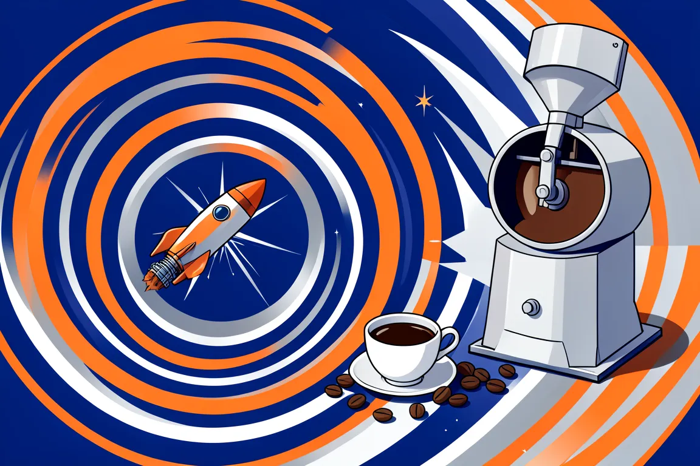

Белые закруглённые формы, орбитальные кольца, звёздные вспышки и широкий шрифт в кобальтовом, оранжевом и серебристом. Начался со Спутника и достиг пика на Экспо-67 в Монреале и EXPO '70 в Осаке, показывая уверенное будущее монорельсов и ракет.

Главная идея
Будущее — место, куда люди отправятся, и чистая закруглённая машинная форма показывает, что путь безопасен и близок.
Принципы дизайна
Стройте формы из кругов и эллипсов: 1–3 орбитальных кольца, сфера или капсула занимают 30–60% ширины макета.
Набирайте заголовки широким гротеском прописными, шириной 120–150% и трекингом от +0,04em до +0,1em.
Берите палитру из одного глубокого синего, одного сигнального оранжевого и серебра на белом фоне; оранжевый занимает меньше 15% поверхности.
Заполняйте одно крупное поле оп-арт концентрическими кольцами или радиальными линиями, 8–16 повторов с ровным шагом 12–24px.
Добавьте 1 звёздную вспышку из 8–16 лучей как фокусный акцент и поместите её на верхнюю треть.
Наклоните главную ось композиции на 8–15 градусов, чтобы макет читался как путь вверх и вправо.
Скругляйте каждый контейнер радиусом 24px или полной таблеткой 999px, как иллюминатор корабля или капсулу.
Сопровождайте каждую картинку машины — ракеты, монорельса, павильона — небольшой технической подписью 11–12px прописными.
Антипаттерны
Органические формы почки и бумеранга с земляными тонами, относящиеся к домашнему атомному стилю
Узкие или антиквенные плакатные шрифты вместо широкого гротеска
Неоновое свечение, хромовые фаски и линии развёртки позднего ретрофутуризма
Серые, грязные или изношенные поверхности, показывающие потрёпанное и тесное будущее
Острые углы 0px у панелей и кнопок
Плотный основной текст широкой гарнитурой
Клипарт с космонавтами и планетами как наполнитель